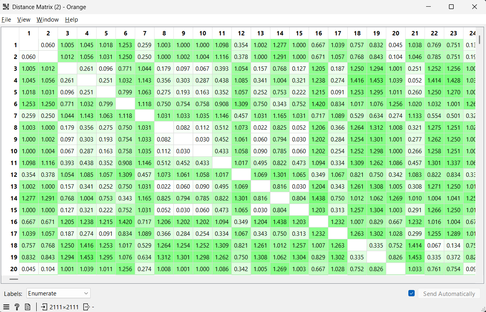

Pengukuran Jarak Data Campuran (Mixed Type Attributes)#
Dataset Obesity merupakan dataset yang berisi informasi mengenai estimasi tingkat obesitas pada individu dari Meksiko, Peru, dan Kolombia berdasarkan kebiasaan makan dan kondisi fisik mereka. Dataset ini sangat sering digunakan dalam bidang data mining untuk menganalisis faktor-faktor risiko kesehatan dan memprediksi tingkat obesitas seseorang.
Dataset ini diperoleh dari repositori UCI Machine Learning. Jumlah data dalam dataset ini adalah 2.111 baris dengan 17 atribut. Setiap baris merepresentasikan data satu individu, sedangkan setiap kolom merepresentasikan karakteristik perilaku, genetik, atau fisik dari individu tersebut.
Tujuan utama dari dataset ini adalah untuk memprediksi tingkat obesitas (atribut NObeyesdad) yang terbagi menjadi beberapa kategori mulai dari berat badan kurang hingga obesitas tingkat III. Dalam mata kuliah Penambangan Data ini, dataset digunakan untuk menganalisis pengukuran jarak antar data yang memiliki tipe data campuran (numerik, kategorikal, ordinal, dan biner).
Sumber Data: Download ObesityDataSet.csv
Deskripsi Atribut#
Berikut merupakan 17 atribut/fitur lengkap yang terdapat dalam dataset Obesity:
No |
Atribut |
Deskripsi |
Tipe Data |
|---|---|---|---|
1 |
Gender |
Jenis kelamin (Male, Female) |
Biner |
2 |
Age |
Usia responden dalam tahun |
Numerik |
3 |
Height |
Tinggi badan dalam meter |
Numerik |
4 |
Weight |
Berat badan dalam kilogram |
Numerik |
5 |
family_history |
Riwayat keluarga dengan berat badan berlebih (yes, no) |
Biner |
6 |
FAVC |
Kebiasaan makan makanan tinggi kalori (yes, no) |
Biner |
7 |
FCVC |
Frekuensi konsumsi sayuran dalam hidangan utama (1-3) |
Numerik |
8 |
NCP |
Jumlah makanan utama per hari (1-4) |
Numerik |
9 |
CAEC |
Konsumsi makanan di antara waktu makan (no, Sometimes, Frequently, Always) |
Ordinal |
10 |
SMOKE |
Kebiasaan merokok (yes, no) |
Biner |
11 |
CH2O |
Jumlah konsumsi air mineral per hari (1-3 liter) |
Numerik |
12 |
SCC |
Pemantauan konsumsi kalori harian (yes, no) |
Biner |
13 |
FAF |
Frekuensi aktivitas fisik per minggu (0-3 hari) |
Numerik |
14 |
TUE |
Waktu penggunaan perangkat teknologi per hari (0-2 jam) |
Numerik |
15 |
CALC |
Frekuensi konsumsi alkohol (no, Sometimes, Frequently, Always) |
Ordinal |
16 |
MTRANS |
Alat transportasi yang digunakan (Public, Walking, Automobile, dsb) |
Nominal |
17 |
NObeyesdad |
Tingkat obesitas (Target Klasifikasi) |
Ordinal |
Karakteristik Dataset#
Dataset memiliki tipe data yang campuran, yaitu:
Numerik:
Age,Height,Weight,FCVC,NCP,CH2O,FAF,TUE.Kategorikal (Nominal):
MTRANS.Ordinal:
CAEC,CALC,NObeyesdad.Biner:
Gender,family_history_with_overweight,FAVC,SMOKE,SCC.
Missing Value#
Berdasarkan hasil tahap data understanding, ditemukan bahwa dataset Obesity ini tidak memiliki missing value (nilai kosong). Seluruh 2.111 baris data terisi lengkap untuk semua 17 atribut. Oleh karena itu, dalam studi kasus ini, kita tidak memerlukan tahapan imputasi (pengisian nilai kosong). Data dapat langsung dilanjutkan ke tahap seleksi atribut dan transformasi untuk perhitungan jarak.
Seleksi Atribut untuk Perhitungan Jarak#
Seleksi atribut bertujuan untuk menentukan fitur-fitur yang relevan dan akan digunakan dalam proses perhitungan jarak antar data. Dari 17 atribut yang tersedia, dipilih 4 atribut utama yang mewakili empat tipe data yang berbeda (Numerik, Nominal, Ordinal, dan Biner).
Atribut Yang Digunakan#
No |
Atribut |
Tipe Data |
Alasan Penggunaan |
|---|---|---|---|
1 |
Weight |
Numerik |
Mewakili data angka kontinu dengan rentang nilai yang lebar. |
2 |
MTRANS |
Nominal |
Menunjukkan alat transportasi tanpa urutan tingkatan. |
3 |
CAEC |
Ordinal |
Menunjukkan frekuensi makan dengan tingkatan yang jelas. |
4 |
Gender |
Biner |
Mewakili jenis kelamin dengan dua kategori. |
Atribut Yang Tidak Digunakan#
Atribut lainnya seperti Age, Height, family_history, hingga NObeyesdad tidak digunakan dalam perhitungan contoh manual ini untuk menyederhanakan proses demonstrasi, meskipun dalam analisis komputasional seluruh atribut dapat dilibatkan.
Transformasi Data#
Transformasi bertujuan untuk mengubah seluruh atribut ke dalam bentuk numerik dan memiliki skala yang sebanding (0 sampai 1) agar dapat diproses menggunakan metode Euclidean Distance.
1. Encoding Data Kategorikal#
Encoding dilakukan untuk mengubah atribut bertipe kategori (teks) menjadi angka.
Gender (Biner) : Menggunakan binary encoding karena hanya memiliki dua kategori.
Female : 1
Male : 0
MTRANS (Nominal) : Diberikan label angka unik untuk setiap alat transportasi.
Public_Transportation : 0
Walking : 1
Automobile : 2
Motorbike : 3
Bike : 4
CAEC (Ordinal) : Diubah menjadi angka berdasarkan tingkatan intensitasnya (0 sampai 3).
no : 0
Sometimes : 1
Frequently : 2
Always : 3
2. Normalisasi Min-Max#
Setelah semua atribut berbentuk numerik, dilakukan normalisasi agar setiap atribut memiliki rentang nilai 0 sampai 1. Hal ini mencegah atribut dengan skala besar (seperti Weight) mendominasi hasil perhitungan jarak.
Rumus normalisasi Min-Max:
Parameter Normalisasi Atribut Numerik & Ordinal:
Weight: \(x_{min} = 39.0\), \(x_{max} = 173.0\)
CAEC: \(x_{min} = 0\), \(x_{max} = 3\)
MTRANS: \(x_{min} = 0\), \(x_{max} = 4\)
Perhitungan Jarak#
Setelah semua nilai atribut ditransformasikan ke rentang 0 sampai 1, data siap digunakan dalam proses pengukuran jarak. Normalisasi ini memastikan bahwa atribut dengan skala besar (seperti berat badan) tidak mendominasi atribut lainnya dalam menentukan kedekatan antar individu.
Metode yang digunakan adalah Euclidean Distance, yang mengukur jarak “garis lurus” antara dua titik dalam ruang multidimensi (dalam hal ini, 4 dimensi karena kita menggunakan 4 atribut).
Rumus Euclidean Distance: $\(d(x_i, x_j) = \sqrt{\sum_{k=1}^{m} (x_{ik} - x_{jk})^2}\)$
Contoh Perhitungan Manual#
Untuk simulasi, kita mengambil dua sampel data dari dataset Obesity:
Atribut |
Individu 1 (Data ke-0) |
Individu 2 (Data ke-3) |
|---|---|---|
Weight |
64.0 kg |
87.0 kg |
MTRANS |
Public_Transportation |
Walking |
CAEC |
Sometimes |
Sometimes |
Gender |
Female |
Male |
Langkah 1: Transformasi & Normalisasi
Kita ubah nilai-nilai tersebut ke bentuk numerik \([0, 1]\) berdasarkan parameter yang telah ditentukan sebelumnya:
Weight (Min: 39, Max: 173):
\(x'_{11} = \frac{64 - 39}{173 - 39} = \frac{25}{134} \approx \mathbf{0.1866}\)
\(x'_{21} = \frac{56 - 39}{173 - 39} = \frac{17}{134} \approx \mathbf{0.1269}\)
MTRANS (Nominal - Simple Matching):
Objek 1:
Public_TransportationObjek 2:
Public_TransportationKarena nilainya SAMA, maka berdasarkan Slide 4: \(d = \frac{1-1}{1} = \mathbf{0}\)
CAEC (Ordinal - Ranking):
\(M = 4\), Keduanya
Sometimes(\(r=2\))\(x'_{13} = \frac{2 - 1}{4 - 1} = \frac{1}{3} \approx \mathbf{0.3333}\)
\(x'_{23} = \frac{2 - 1}{4 - 1} = \frac{1}{3} \approx \mathbf{0.3333}\)
Gender (Biner - Symmetric):
Keduanya
Female, maka selisihnya = 0
Langkah 2: Menghitung Jarak Euclidean
Sekarang kita masukkan nilai yang sudah dinormalisasi ke dalam rumus:
Implementasi Menggunakan Python#
Berikut adalah kode untuk memverifikasi perhitungan jarak di atas secara komputasional menggunakan pustaka pandas dan numpy.
Data setelah transformasi & normalisasi:
Weight MTRANS CAEC Gender
0 0.186567 0.00 0.333333 0
1 0.126866 0.00 0.333333 0
2 0.283582 0.00 0.333333 1
3 0.358209 0.25 0.333333 1
4 0.379104 0.00 0.333333 1
Distance Matrix:
[[0. 0.05970149 1.00469493 1.04496933 1.01836664]
[0.05970149 0. 1.01220553 1.05641834 1.03132168]
[1.00469493 1.01220553 0. 0.26090069 0.09552239]
[1.04496933 1.05641834 0.26090069 0. 0.25087173]
[1.01836664 1.03132168 0.09552239 0.25087173 0. ]]
Matriks Jarak (Distance Matrix)#
Hasil perhitungan jarak Euclidean untuk setiap pasangan data kemudian disusun ke dalam sebuah matriks jarak (\(D\)). Matriks ini bersifat simetris, di mana nilai diagonal utamanya adalah 0 (karena jarak objek terhadap dirinya sendiri adalah nol).
Berdasarkan perhitungan pada 5 sampel data pertama dari dataset Obesity, diperoleh struktur matriks jarak sebagai berikut:
Karakteristik Matriks Jarak:
Simetris: Nilai \(d(i,j)\) selalu sama dengan \(d(j,i)\). Contohnya, jarak antara Data ke-0 dan Data ke-1 (\(0.0597\)) sama dengan jarak Data ke-1 terhadap Data ke-0.
Identitas: Nilai diagonal (\(d(i,i)\)) selalu \(0\).
Interpretasi: Semakin kecil nilainya (mendekati 0), maka kedua individu tersebut memiliki karakteristik fisik dan kebiasaan yang semakin mirip. Sebaliknya, nilai yang besar (di atas 1) menunjukkan perbedaan yang signifikan.
Implementasi Menggunakan Orange#

Setelah melalui perhitungan manual, langkah selanjutnya adalah pengujian secara komputasional menggunakan perangkat lunak Orange Data Mining. Dalam implementasi ini, kita memasukkan seluruh 2.111 baris data dengan alur kerja (workflow) sebagai berikut:
File: Memuat
ObesityDataSet.csv.Select Columns: Memilih atribut
Weight,MTRANS,CAEC, danGender.Preprocess: Melakukan Min-Max Normalization dan Continuization (untuk data kategori).
Distances: Menghitung jarak menggunakan Euclidean Distance.
Distance Matrix: Menampilkan matriks berukuran \(2111 \times 2111\).
Hasil yang didapatkan secara komputasional menunjukkan konsistensi dengan perhitungan manual yang telah dilakukan, di mana perbedaan nilai dipengaruhi oleh pembulatan angka desimal.